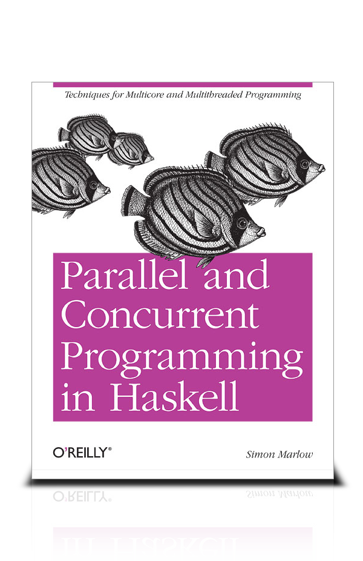
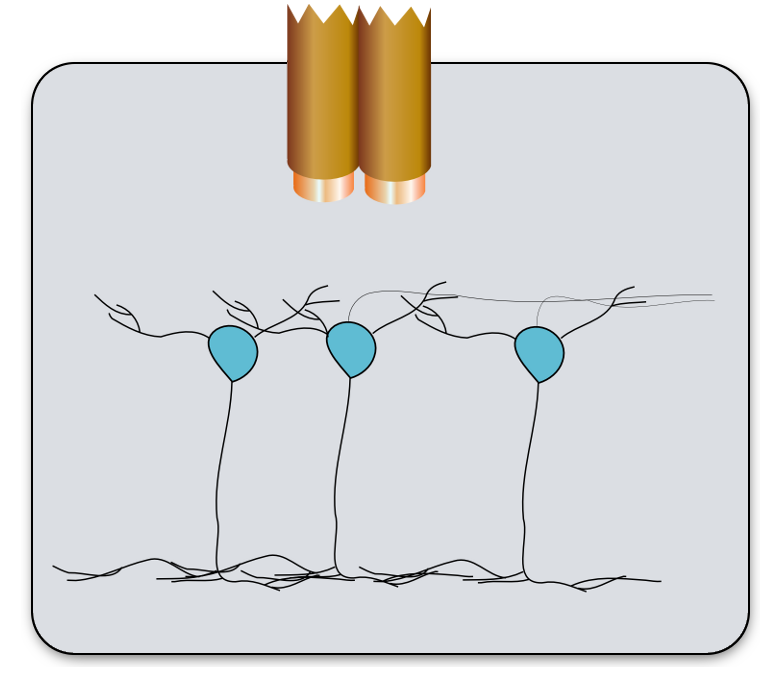
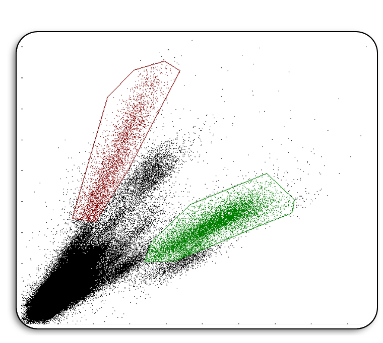
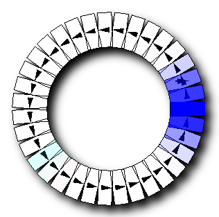
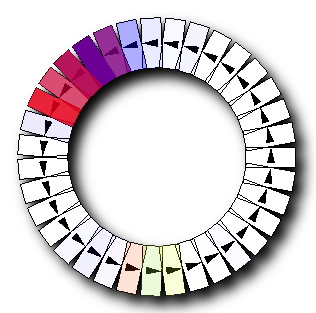
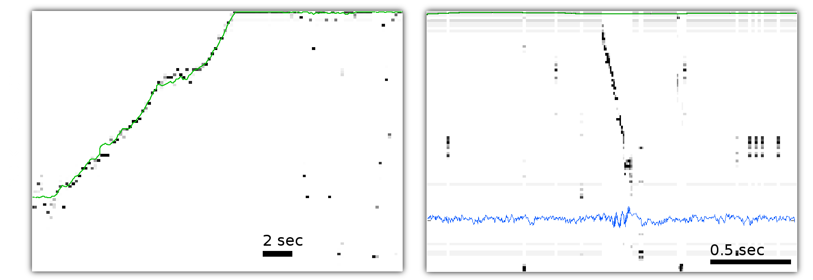
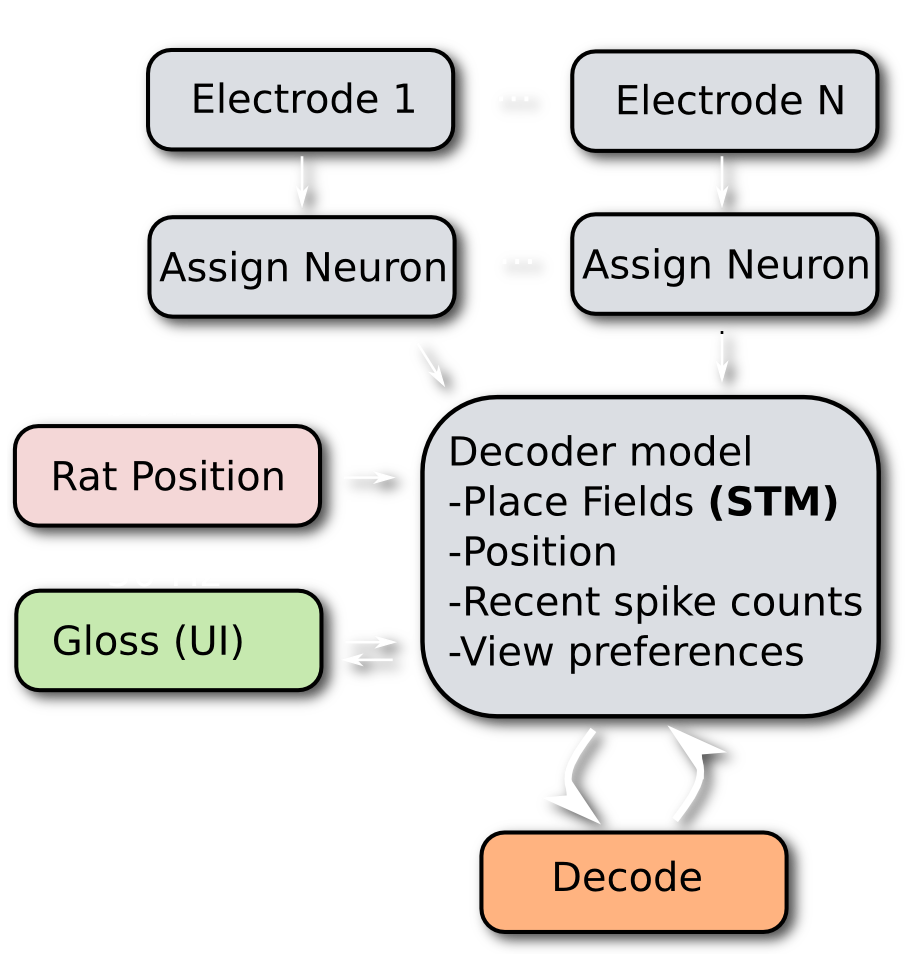

Concurrency in Haskell with STM
Greg Hale / Boston Haskell Meetup / 2014-05-21
Parallel & Concurrent Programming

- By Simon Marlow
- Thorough & really well written
- Free online
chimera.labs.oreilly.com/books/1230000000929 - Worth a buy
http://shop.oreilly.com/product/0636920026365.do
Haskell is empowering
On Haskell's learning curve
- Haskell: Easy things → Hard
(at first) - ...some Hard things → Easy
- Case in point: concurrency
A little about me
Neuron recording with tetrodes


- Step 1 Cocktail party problem in the brain, who's saying what?
- Pair of wires, each hearing the same "spikes" from nearby neurons
- Neuron A closer to wire 1 → A's spikes bigger on channel 1. Vice versa
- Several neurons: spikes form clusters in Amplitude 2 vs. Amplitude 1 plot
- With 32 wire pairs, record about 50 neurons
Interpreting the spikes: Place fields

Neuron A

Neuron B
- Count spikes from a cell while rat visits each track position
- Divide by time speant in each position: Place field
- Each place cell has a different place field
Position decoding
- Taking all spikes from all neurons in a 20ms window ...
- and all the place fields
- Decode instantaneous position from the spiking
- Running (left) - decoding matches rat's position - expected
- Eating (right) - hippocampus ocassionally takes a lap - weird!

Goal: realtime decoding

How we would study this, if we could detect it online
- Reward rat for emitting left-going replay
Can replay be trained? - Interrupt right-going replay
Does place cell spiking or memory depend on intact replay? - Edit replay
Is replay plastic? Can we tweak it by adding spikes?
Decoding concurrency requirements

- Some threads want to lock the whole structure (UI, decoding)
- Some threads want more fine-grained locks (updating one place field)
- Mutexes here become hard to extend, prone to deadlock
- STM: No locks, optimistically let threads update state simultaneously
- Runtime detects when changes collide
- In case of collission, roll back one thread and retry
- Programmer never has to think about locks!
- But, is this too slow?
Realtime* place field tracking
- Spikes & position read from disk
- Still need to write realtime video tracker
- Realtime parts: spike sorting, place field tracking, position decoding
- Lots more work to do before actual experiments are possible
Realtime* position decoding
- Spikes & position read from disk
- Still need to write realtime video tracker
- Realtime parts: spike sorting, place field tracking, position decoding
- Lots more work to do before actual experiments are possible
Nice Properties of STM
- Guarenteed Contistent data
- Pretty fast
- Flexible granularity level
- No deadlocks
- Concurrency becomes composable
Glueing things together, with monads
Monad: The programmable ;*
a = 0; // Environment: {i:10, a:0}
b = a + 1; // Environment: {i:10, a:1, b:1}
return (b + a);
; says, run statement on the left. Make its results available in the environment of everything on the right.
Monad: The programmable ;*
a = 0; // Environment: {i:10, a:0}
b = a + 1; // Environment: {i:10, a:1, b:1}
return (b + a);
; says, run statement on the left. Make its results available in the environment of everything on the right.
Concurrency: extreme real-world messiness
Place field type (in C)
struct PlaceField {
double binSpikeRates[100];
int nNewSpikes;
Pos *posAtNewSpike;
}Two options:
- Run as is. Threads overwrite each other half way through operations. Guaranteed data corruption and crashes
- Use locks. No more corrupted data. Guaranteed freezing.
Spike input thread
void acceptSpike(PlaceField *pf, Pos *p){
pf->nNewSpikes++;
pf->posAtNewSpike[s.nNewSpikes] = copy_pf(p);
}Reconstruction / Spike merger thread
PosEst *doBayes(PlaceField *pf[], int nPf)
{
PosEst *pe = createPosEstimate(pf,nPf);
for (int n = 0; n < nPf; n++){
writeSpikesToField(pf[n]);
resetNewSpikes(pf[n]);
}
}Monads to the rescue
STM: a journaling concurrency monad
- STM: Software Transactional Memory
- Only 3 things may happen in the
STMmonad: - Pure function application
- Assignment to special shared variables: TVar's
>>=to glue together independent STM actions
Streaming position reconstruction in the STM monad
- STM lets threads run without locks
- Tracks TVar reads/writes in a journal
- In case of collision, unroll action, retry
- Only possible because of type system: no arbitrary state changes allowed

Types guide the implementation
-- Full 3D position data.
data Position = Position
{ _posTime :: !ExperimentTime
, _location :: !Location
, _angle :: !Angle
, _heading :: !Double
, _speed :: !Double
, _posConfidence :: !PosConf
, _headingHistory :: [Double]
, _speedHistory :: [Double]
, _lastGoodTime :: !ExperimentTime
, _lastGoodLoc :: !Location
}
deriving (Eq, Ord, Show, Generic)-- Position/segment relationship
data TrackPos = TrackPos
{ _trackBin :: !TrackBin
, _trackDir :: !TrackDirection
, _trackEcc :: !TrackEccentricity
} deriving (Eq, Ord, Show)-- Directional & spatial track segment
data TrackBin = TrackBin
{ _binNam :: !String
, _binLoc :: !Location
, _binDir :: !Double -- radians
, _binA :: !Double --
, _binZ :: !Double
, _binWid :: !Double
}
deriving (Eq, Ord, Show)-- Track is a list of segments
data Track = Track
{ _trackBins :: [TrackBin]}
deriving (Eq, Show)-- Field: Any function over TrackPos's
type Field a = Map.Map TrackPos aDecoder's stateful operation
main = ds <- newTVar :: IO DecoderState
mapM_ (\f -> async (parseToStream f >-> updateWithSpike ds)) spikeFiles >>=
async (parseToStream posFile >-> updateWithPos ds) >>=
async (stepDecoderLoop ds) >>=
async (stepVisualization ds)Essence of the stateful part of the decoder
Every other function in the system is a function it the math sense: stateless relationship between argument and return value
The path to doing actual experiments
ArtE backend can record spikes, ArteDecoder can decode at speed - a couple more hurdles in the way:
- Realtime position tracking
- Connect ArtE spike detection (or OpenEphys, or Pugl) to decoder
- Labal replay event boundaries in realtime
- Realtime computer-assisted clustercutting, or
- Realtime clusterless